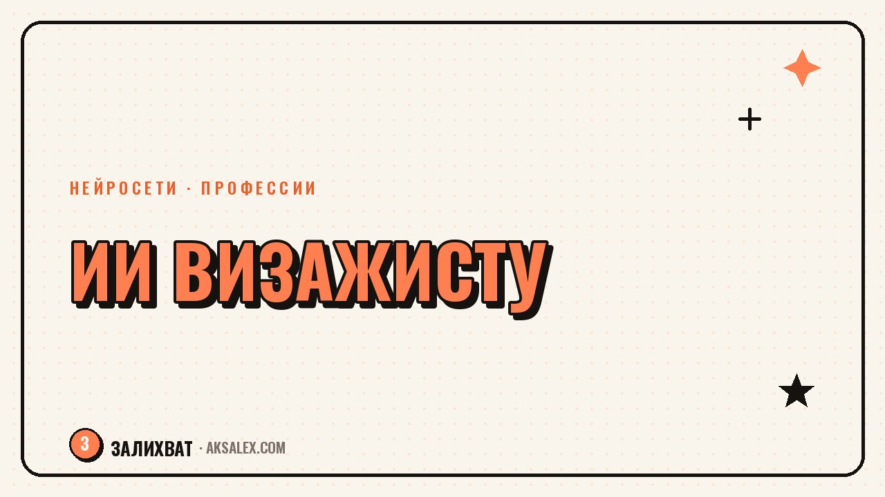

Нейросети для визажиста: от обучения до записи клиентов

Визажист держит в голове десятки вещей сразу: технику макияжа, расписание и переписку с клиентами. Нейросети не заменят твои руки и глаз, но заберут часть рутины вокруг работы. Разберём, где они реально помогают - от обучения техникам до записи клиентов.
Обучение новым техникам через нейросети
Раньше визажист учился по роликам на YouTube или на очных курсах. Сейчас можно задать текстовый вопрос нейросети-чату и получить структурированный разбор техники: как растушевать сложный смоки-айс, как подобрать базу под жирную кожу, какие кисти использовать для скульптурирования. Это не заменяет практику на лице, но экономит время на поиске ответа.
Как задавать вопросы, чтобы получить пользу
Чем конкретнее вопрос, тем точнее ответ. Вместо «как делать макияж глаз» спроси «как визуально увеличить близко посаженные глаза с помощью теней и подводки, пошагово». Нейросеть разложит ответ на этапы, и ты сможешь сверить его со своим опытом.
- Разбор конкретной техники по шагам
- Подбор продуктов под тип кожи или задачу клиентки
- Объяснение, почему не держится тон или скатываются тени
Мудборды и подбор образа под клиентку
Перед съёмкой или свадьбой визажисту нужно показать клиентке примерный результат. Генераторы изображений помогают быстро собрать референсы под её внешность: тип лица, цвет глаз, оттенок кожи, пожелания по стилю. Это удобнее, чем листать чужие портфолио в поисках похожего случая.
Важно: такие картинки - это ориентир по настроению и цвету, а не точный прогноз результата. Клиентке стоит сразу объяснять, что финальный макияж будет учитывать особенности её лица.
Мудборд из нейросети - это разговор с клиенткой на одном языке до начала работы, а не обещание конкретной картинки на лице.
Портфолио: обработка фото без фотографа
Хорошее портфолио держит клиентов не хуже рекомендаций. Нейросети помогают с рутинной частью: убрать неудачный фон за кадром, выровнять свет на телефонных фото, увеличить разрешение смазанного снимка перед публикацией в сторис. Это не про «наврать» результат, а про то, чтобы отвлекающие детали не портили впечатление от макияжа.
Что можно, а что не стоит обрабатывать
Свет, фон, резкость - можно и нужно подтягивать. Форму лица, цвет кожи или результат самого макияжа трогать не стоит: разрыв между фото и жизнью бьёт по доверию сильнее, чем скромная картинка без фильтров.
- Удаление лишних предметов из кадра
- Выравнивание баланса белого при плохом освещении
- Повышение чёткости для публикации в большом размере
Запись клиентов и переписка без потерянных сообщений
Самая частая боль визажиста на подработке - сообщения приходят в директ, WhatsApp и на почту одновременно, и часть клиентов теряется, потому что ответ пришёл через два дня. Чат-боты на основе нейросетей и сервисы онлайн-записи решают именно это: отвечают на типовые вопросы о цене и свободных окнах сразу, а сложные случаи передают тебе.
Для свадебного визажиста это особенно важно: невесты пишут вечером, а отвечать нужно быстро, иначе уйдут к тому, кто ответил первым. Бот с базовыми ответами про стоимость и выезд закрывает это ожидание, даже если ты на съёмке.
| Задача | Что помогает | Когда оправдано |
|---|---|---|
| Напоминания о записи | Бот в мессенджере или сервис онлайн-записи | Когда клиентов больше 10-15 в месяц |
| Ответы на частые вопросы | ИИ-чат с заготовленными сценариями | Когда одни и те же вопросы повторяются |
| Подбор времени под несколько клиенток | Календарь с автоматическим расчётом слотов | При плотном графике выездов |
| Сбор отзывов после работы | Автоматическая рассылка с просьбой оставить отзыв | После каждой свадьбы или съёмки |
Контент и соцсети: экономия времени на подписях
Фото готово, но под ним нужна подпись, которая не звучит как отчёт о работе. Нейросеть помогает набросать черновик текста к посту: описать технику, настроение образа. Твоя задача - довести черновик до своего голоса и добавить деталь, которую заметила только ты во время работы.
- Подписи к сериям фото после одной съёмки
- Сценарий короткого видео «макияж за 60 секунд»
- Пост с разбором ошибок в домашнем макияже
Частые вопросы
Заменит ли нейросеть визажиста?
Нет, руки и чувство цвета нейросеть не заменит. Она берёт рутину вокруг работы - тексты, обработку фото, ответы на вопросы, а макияж остаётся твоим навыком.
Можно ли показывать клиентке сгенерированное изображение как результат?
Лучше показывать его как ориентир по настроению и цвету, а не как точный прогноз. Сразу объясняй, что финальный макияж будет адаптирован под её лицо.
С чего начать, если никогда не пользовалась нейросетями?
Начни с одной задачи - например, с черновиков подписей к постам. Освоив её, добавляй следующую, не пытайся внедрить всё сразу.
Какие нейросети подходят визажисту для обработки фото портфолио?
Подойдут сервисы для удаления фона, выравнивания света и резкости снимков с телефона. Главное - не трогать сам результат макияжа и форму лица.
Стоит ли настраивать чат-бота для записи, если клиентов немного?
При небольшом потоке проще отвечать вручную - настройка бота того не стоит. Автоматизация оправдывает себя, когда клиенты начинают теряться без быстрого ответа.
Раз тема оказалась полезной, вот что почитать следующим. Что делать с энергией перемен в кризисе среднего возраста, не разрушая то, что уже построено.
Читать статью →а не вручную